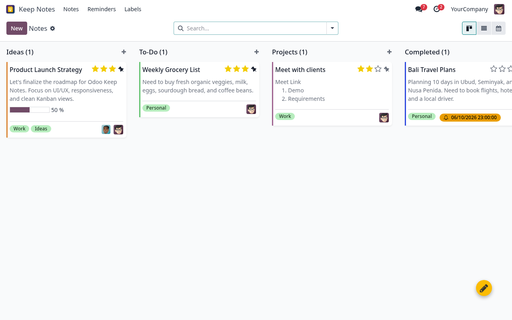
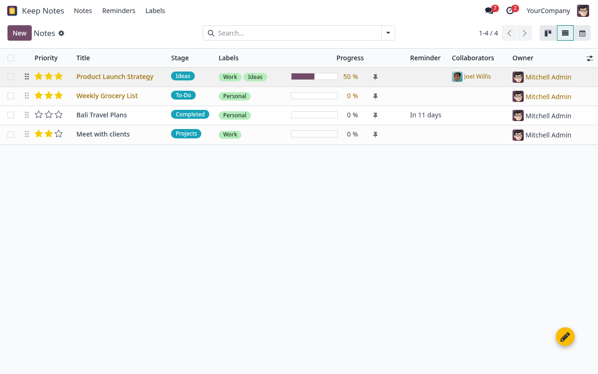

Odoo Keep Notes - Ultimate Whiteboard & Task Manager
A sleek, dynamic digital whiteboard featuring interactive checklists, global triggers, and smart reminders.
- 📋 Interactive To-Do Checklists: Add dynamic checkbox sub-tasks directly inside note cards and watch the card progress bar calculate completion percentages in real-time.
- 👥 Multi-User Note Collaboration: Assign multiple team members as collaborators to work on task whiteboard cards together, with integrated Chatter logs.
- 💌 One-Click HTML Email Sharing: Instantly broadcast custom-formatted HTML email summaries of checklists and rich note texts to external partners.
- 🎨 Ultra-Modern UI Dashboard: Fully redesigned high-end Kanban, List, and Form views featuring custom starred priorities and days-remaining deadline warning alerts.
- 🛡️ Strict Discard Safeguard: Modifying stage columns and clicking "Discard" now perfectly reverts changes, preventing accidental database save overrides.
- 🚫 Empty-Note Validation: Prevents creation of blank, untitled, or empty note records to keep your workspace clean and professional.
Odoo Keep Notes seamlessly integrates into your Odoo 18 workspace, offering a beautiful drag-and-drop Kanban workspace, global floating quick triggers, real-time team collaboration, and schedule-sensitive timelines to keep your enterprise team focused and highly productive.

Why Choose Odoo Keep Notes?
Most note tools are isolated, slow, and separate from your ERP workflows. Odoo Keep Notes is built 100% natively on the Odoo 18 framework. This means instant linking to your internal contacts, real-time Odoo Chatter logs, native backend security compliance, and zero external API dependencies. One clean tool, unlimited team productivity.
Global Quick-Triggers
Create new notes instantly from ANY dashboard or form view in Odoo using our floating action trigger without interrupting your current workflow.
Checklist Progress
Break notes down into interactive sub-tasks. Check them off as you work, and watch the card progress bar dynamically fill up!
Clean Architecture
Native Python compliance with safe defaults prevents database registry locks, start-up warnings, or Odoo app store rejection.
Key Features & Benefits
Dynamic Kanban Whiteboard
Experience a gorgeous drag-and-drop board with full-width note headers, collaborator avatars, star priorities, and interactive stage flows.
Global Floating Access
A premium, non-intrusive floating action button overlay provides immediate creation access from any window. Just type and save.
Timeline Calendar View
Visualize note deadlines natively inside Odoo's interactive Calendar. Reschedule easily using standard drag-and-drop calendar events.
Team Collaboration
Assign multiple team members as collaborators. Track change history, discuss notes, and receive automated logs via the integrated Odoo Chatter feed.
HTML Note Email Sharing
Send formatted external email summaries of your notes, lists, and checklists to clients or vendors instantly with a beautifully styled HTML template.
High-Density List Audit
Audit hundreds of files at once using an upgraded list view with colored priority badges, live progress indicators, and remaining-days deadline warnings.
Go beyond plain unorganized notes. Standardize your operations by tracking notes natively across 4 pre-configured customizable workflow stages.
💡 Ideas
📝 To-Do
⚙️ Projects
✅ Completed
Step-by-Step Walkthrough Screenshots
Follow our high-fidelity layout sequence to see exactly how beautifully the elements align in your local Odoo environment.
Four-Step Walkthrough Flow:
1. Flat Icon
Clean dashboard app launcher matching standard Odoo 18 style.
2. Floating Trigger
Non-intrusive floating action overlay button available on any screen.
3. Note Workspace
Add rich checklists, schedule active alarms, and choose card colors.
4. Calendar timeline
Drag, drop, reschedule note alarms natively inside standard timeline views.
And Additional High-Density Views...
🎨 Premium Kanban Board: Full cover header images, quick-star
priorities, and dynamic stages.
📊 High-Density List Dashboard: View active progress bars,
label tags, and days-remaining countdowns.
👥 Odoo Chatter Collaboration: Log modifications, tag team
users, and converse inside standard threads.
⏰ Alarm & Reminder Badges: Safe bootstrap database
expanding stage parameters automatically.
Module Feature Details
Dive deeper into the technical and graphical capabilities that make Odoo Keep Notes a must-have for active enterprise teams.


Dynamic Drag-and-Drop Digital Whiteboard
Move cards, track priorities, and get immediate visual status highlights:
- Pre-configured Stages: Ideas, To-Do, Projects, and Completed
- Header cover images: Set full-width image attachments directly as note headers
- Starred Priority: Quick-click star overlays to mark urgent task elements
- Collaborator Avatars: Displays small active icons of assigned collaborators on card faces
- Custom Colors: Six distinct high-contrast card colors for quick visual sorting
Nested Sub-Checklists & Live Tracking
Break large project parameters down into simple bite-sized action tasks:
- Live Progress Bars: Watch note progress fill up automatically in real-time
- Quick Checklist Pop-ups: Add, edit, or remove sub-task items quickly
- Drag-and-Drop Reordering: Arrange sub-task sequence dynamically
- Progress status list-view: View live progress percentages inside high-density lists
Odoo Chatter Integration & Email Shares
Ensure your team and external stakeholders stay completely aligned:
- Collaborator Assigns: Assign multiple database users as note card collaborators
- Real-time Chatter logs: Post note modifications, tag team users, and converse in threads
- Custom HTML Email Templates: Send formatted external email summaries in one click
- Automated Activities: Connect reminders to create real-time calendar log activities
Smart Deadline Schedulers
Schedule important tasks, plan reminders, and audit schedule items easily:
- Active Alarm Dates: Set alarm milestones directly in note cards
- Timeline Calendar View: Toggle Month, Week, and Day calendar grids
- Drag-and-Drop Rescheduling: Drag events to update note alarms automatically
- Overdue Highlights: Color alerts signal when notes are past their deadlines
Safe Odoo 18 Registry Architecture
Secure, robust, and clean development best practices:
- Access CSV rules: Full access rights controls (`ir.model.access.csv`) keeping data safe
- No DB Locks: Standard field defaults prevent registry-load failures
- XML-Schema compliance: Enforces Odoo 18 strict tag standards
- LGPL-3 Licensed: Full liberty to customize or integrate for multiple clients
Simple Setup Process
Download and activate Odoo Keep Notes on your local server or production client in under 5 minutes.
Download
Download Keep Notes package from Odoo App Store.
Extract
Extract zip into custom addons path (e.g. mj_custom).
Update Apps
Log into Odoo, turn on developer mode, update listing.
Activate
Locate Odoo Keep Notes, click install & enjoy!
Use Cases & Examples
Agile Project Sprints
Scenario: Product owners and Scrum masters need a lightweight whiteboard sprint
sheet.
With Keep Notes, agile teams can:
- Plan weekly sprints, drag tasks from To-Do to Completed
- Add nested checklist items to capture agile deliverables
- Tag team members to collaborate on target outcomes
Business Impact: Lightweight whiteboard increases task transparency without heavy task system overheads.
Meeting Minutes & Action Items
Scenario: Board members and meeting leads need to capture rapid minutes &
actions.
Meeting moderators can organize outcomes conversationally:
- Create meeting templates using beautiful rich HTML note areas
- List actions as checklist items, assigning stakeholders as collaborators
- Send final HTML summaries to all client users in one click
Business Impact: Faster minutes summaries, clearer action accountability, and transparent logs.
Study Guides & Learning Trackers
Scenario: Trainees and managers need learning milestone trackers.
Employees can manage their study logs easily:
- Track training milestones, link relevant PDF attachments
- Configure study timelines via interactive Calendar schedules
- Mark urgent study goals using Starred Priority tags
Business Impact: Standardized, visible employee onboarding tracking logs directly inside Odoo.
Technical Specifications
Requirements
- Odoo 18.0 (Community & Enterprise)
- PostgreSQL database setup
- Zero external API credentials required
Protocols Supported
- Native Odoo 18 XML schema views
- Safe bootstrap Many2one constraints
- Chatter-logged messaging channels
- Inline responsive Bootstrap 5 styling
Performance Features
- Standard indexing on Stage constraints
- No recursive database locks
- Highly-cached Bootstrap layouts
- Responsive desktop & mobile assets
Security Features
- Backend authorization CSV models
- Native field write authorization constraints
- Complete changes logged in Chatter feed
Ready to revolutionize your Odoo note-taking?
Experience the ultimate native productivity upgrade. Keep your team aligned, focus on deadlines, and manage tasks natively in Odoo.
For support, custom setups or questions, contact Mj.